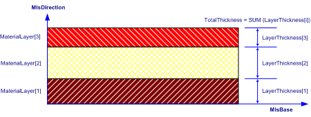

8.10.3.7 IfcMaterialLayerSet
| Ensemble de couches de matériau homogène |
| Gruppe von Materialschichten |
The IfcMaterialLayerSet is a designation by which materials of an element constructed of a number of material layers is known and through which the relative positioning of individual layers can be expressed.
The Material Layer Set Base (MlsBase) describes the imaginary axis along which the material layers are positioned.
- In case of assigning the IfcMaterialLayerSet directly to an element or element type, the individual layers are stacked
according to their position within the list of MaterialLayers without providing information on how to spatially relate the
material layer information to the shape representation of the element or element type.
- In case of assigning the IfcMaterialLayerSet through an IfcMaterialLayerSetUsage to an element,
the MlsBase is positioned along the reference axis or reference plane of the element. An offset from the reference axis or plane to MlsBase is
supported by IfcMaterialLayerSetUsage which combines layers and an offset. Offsets from element edges are supported by the subtype
IfcMaterialLayerWithOffsets. The positive LayerSetDirection (MlsDirection) describes the direction by which the individual
material layers are stacked. The IfcMaterialLayer's are stacked with no gap. Gaps within a material layer set are expressed as layers by
themselves.
EXAMPLE A cavity brick wall would be modeled as IfcMaterialLayerSet consisting of three
IfcMaterialLayer's: brick, air cavity and brick. The air gap is identified by the IsVentilated flag at
IfcMaterialLayer.
HISTORY New entity in IFC1.0
IFC4 CHANGE Subtyped from IfcMaterialDefinition, the attribute Description
has been added at the end of attribute list.
Attribute use definition
As shown in Figure 327, each IfcMaterialLayerSet implicitly defines a material
layer set base line (MlsBase), to which the start of the first
IfcMaterialLayer is aligned. The total thickness of a
layer set is calculated from the individual layer thicknesses, the
first layer starting from the MlsBase and following layers being
placed on top of the previous (no gaps or overlaps).
 |
Figure 327 — Material layer set |
XSD Specification:
<xs:element name="IfcMaterialLayerSet" type="ifc:IfcMaterialLayerSet" substitutionGroup="ifc:IfcMaterialDefinition" nillable="true"/>
<xs:complexType name="IfcMaterialLayerSet">
<xs:complexContent>
<xs:extension base="ifc:IfcMaterialDefinition">
<xs:sequence>
<xs:element name="MaterialLayers">
<xs:complexType>
<xs:sequence>
<xs:element ref="ifc:IfcMaterialLayer" maxOccurs="unbounded"/>
</xs:sequence>
<xs:attribute ref="ifc:itemType" fixed="ifc:IfcMaterialLayer"/>
<xs:attribute ref="ifc:cType" fixed="list"/>
<xs:attribute ref="ifc:arraySize" use="optional"/>
</xs:complexType>
</xs:element>
</xs:sequence>
<xs:attribute name="LayerSetName" type="ifc:IfcLabel" use="optional"/>
<xs:attribute name="Description" type="ifc:IfcText" use="optional"/>
</xs:extension>
</xs:complexContent>
</xs:complexType>
EXPRESS Specification:
|
ENTITY IfcMaterialLayerSet
|
 EXPRESS-G diagram
EXPRESS-G diagram
Attribute Definitions:
| MaterialLayers | : |
Identification of the IfcMaterialLayer’s from which the IfcMaterialLayerSet is composed.
|
| LayerSetName | : |
The name by which the IfcMaterialLayerSet is known.
|
| Description | : |
Definition of the IfcMaterialLayerSet in descriptive terms.
IFC4 CHANGE The attribute has been added at the end of attribute list.
|
| TotalThickness | : |
Total thickness of the material layer set is derived from the function IfcMlsTotalThickness.
|
Inheritance Graph:
|
ENTITY IfcMaterialLayerSet
|
 Link to this page
Link to this page